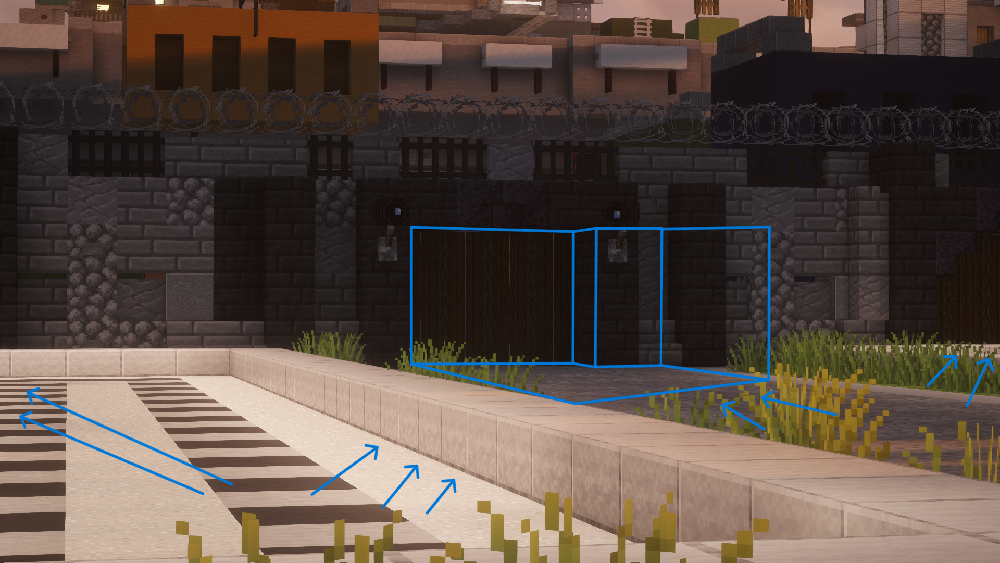
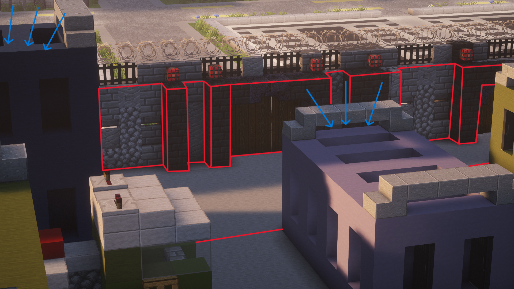
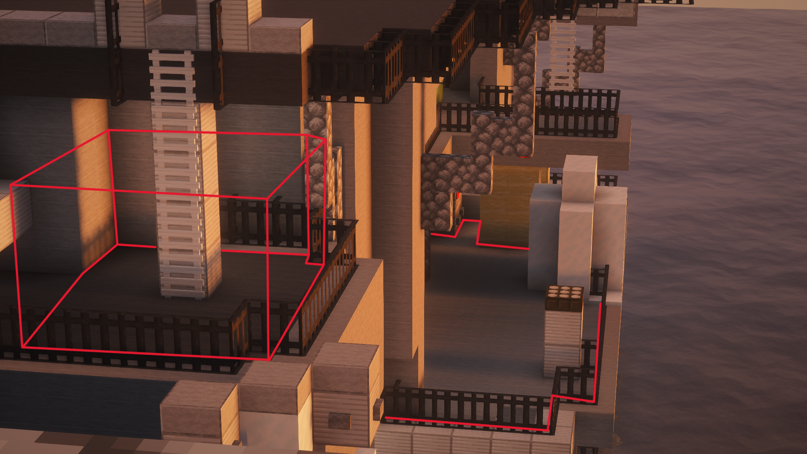
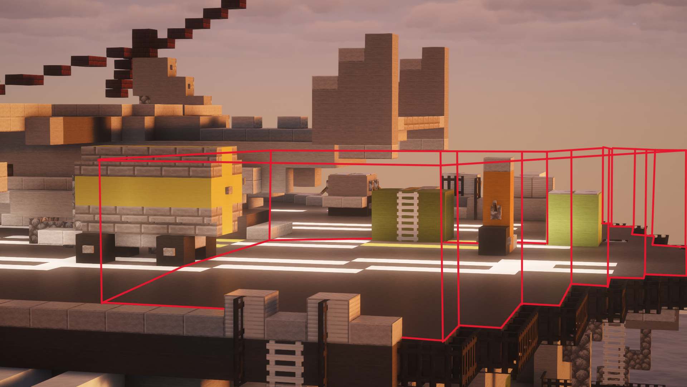
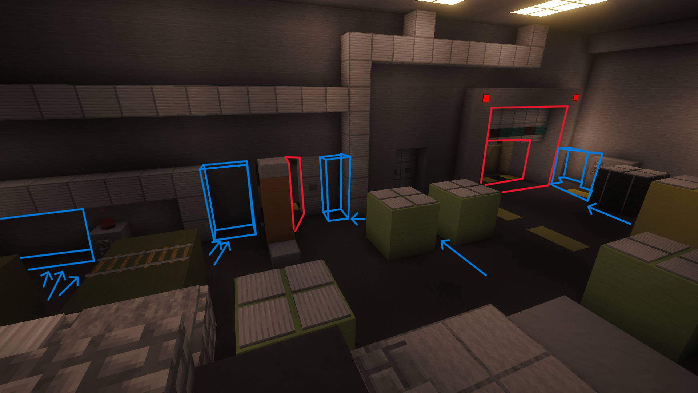
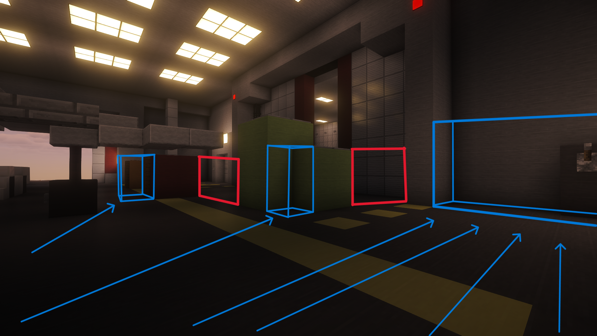
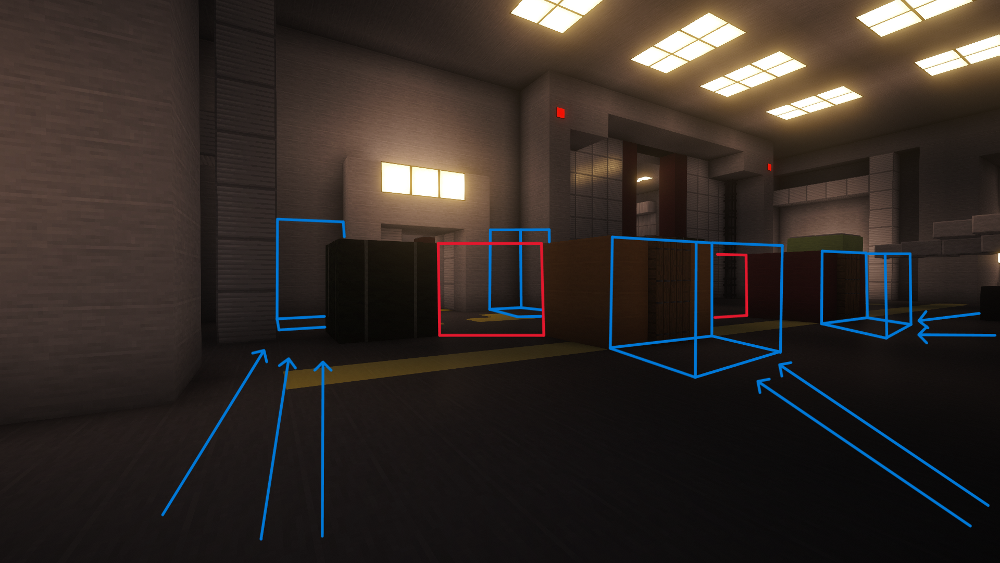
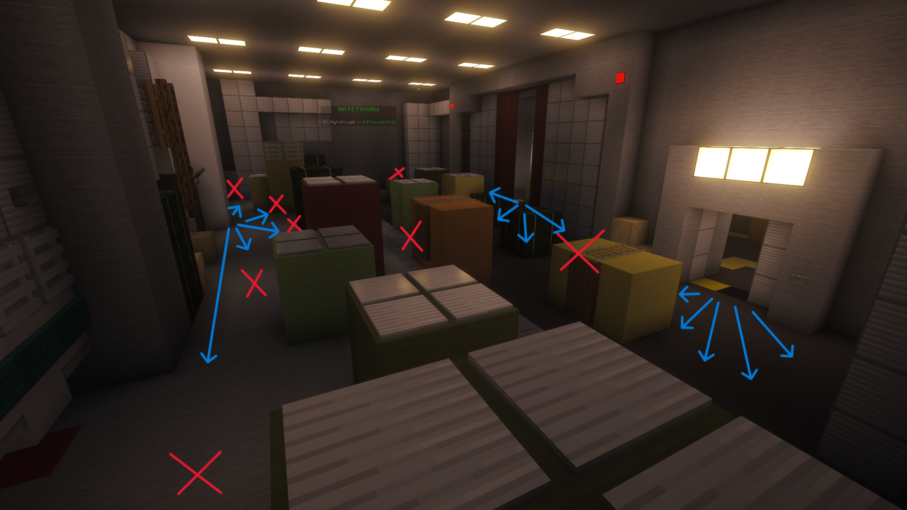
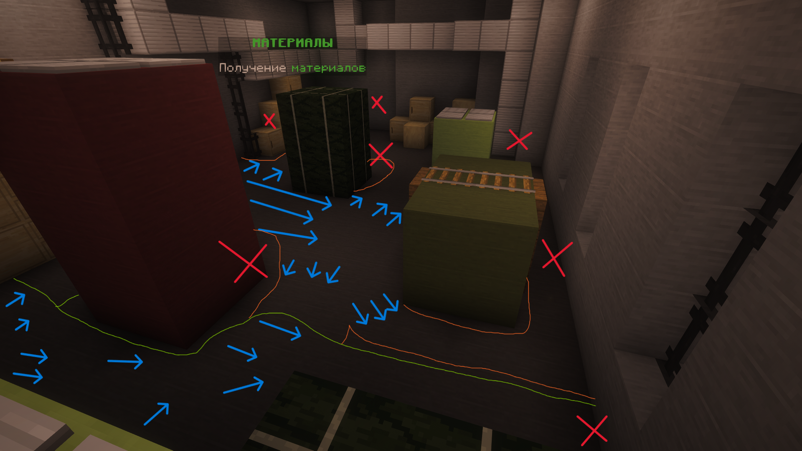

Стратегия базируется на чётком взаимодействии: Складской отдел (MQS), Военные инженеры-механики (MME), Военная Дисциплинарная Гвардия (MDG) и Отдел специальных операций (SO) под командованием Высшего состава.
Фаза 0 Сбор и построение (до выдвижения)
- Весь командный состав и личный состав строятся у трёх калиток (ворота военной базы), не заходя на территорию авианосца.
- Ожидание остальных сотрудников, строгий контроль по рации.
- Командир проверяет готовность, экипировку.

📐 места построения у трёх калиток
Фаза 1 Проверка снайпера на крыше авианосца
- После сбора — резкое выдвижение за контейнеры. Бойцы прячутся в укрытия за контейнера, проверяя наличие снайпера на крыше авианосца.
- Визуальный анализ: снайпер контролирует правый и центральный вход, но врядли уследит за левым сектором. Именно левые калитки позволяют бесшумно ликвидировать снайпера.
- Некоторые армейцы заходит с левой стороны и устраняет снайпера, открывая путь группе.

🎯 красным: зоны обзора снайпера, синим: укрытия армейцев
Фаза 2 Действия SO — захват вышки
- SO незамедлительно бегут на вышку (справа сверху порта). Оттуда контролируют палубу и правые материалы.
- С вышки ведётся подавление огневых точек противника на правой стороне и палубе.
- Красным на схемах отмечены вероятные позиции врага, которые простреливаются SO.

🗼 зоны поражения с вышки (красные отметки)

🗼 дополнительные сектора обстрела с вышки
Фаза 3 Массовое выдвижение и равномерное распределение
- Толпа армейцев заходит одновременно, распределяясь ровным количеством на левые и правые материалы.
- Из каждой группы выделяется 1-2 человека, которые идут через верхнюю палубу, чтобы зайти со спины противника на правых материалах.
Фаза 4 Подготовка и занятие позиций (без высовывания)
- Левые материалы: бойцы занимают безопасные зоны (синие зоны), не высовываясь до команды.
- Правые материалы: аналогично — синие зоны для сбора, красные для контроля огня после приказа.

⬅️ левые материалы: красное (опасно высовываться), синее (безопасный сбор)

➡️ Схема правых материалов 1

➡️ Схема правых материалов 2
Фаза 5 Финальный штурм (одновременный заход)
- После объявления в рацию «Штурм» все группы одновременно залетают на материалы, не давая ОПГ перегруппироваться.
- Правые материалы: синие стрелки — армейцы, красные кресты — позиции ОПГ.
- Левые материалы: синие стрелки — основные силы, оранжевые линии — заход слева, зелёные — справа.

⚔️ рейд правых материалов: синие стрелки (армейцы), красные крестики (ОПГ)

⚔️ рейд левых материалов: зелёные линии (заход справа), оранжевые (заход слева)
Фаза 6 Зачистка и полный контроль
- После подавления сопротивления — мобильные группы прочёсывают внутренние помещения.
- Запрещено: покидать зону боя до отбоя, прыгать в воду, рукопашная при наличии оружия.
- После обьявления: «Тревога окончена», построение, разбор, выдача галочек.
Роли отделов для рейда
SO — Вышка, снайперский контроль, подавление дальних целей
MDG — Порядок на точке сбора, фиксация нарушений
MQS — Боезапас и резервные ящики
MME — Техническая поддержка